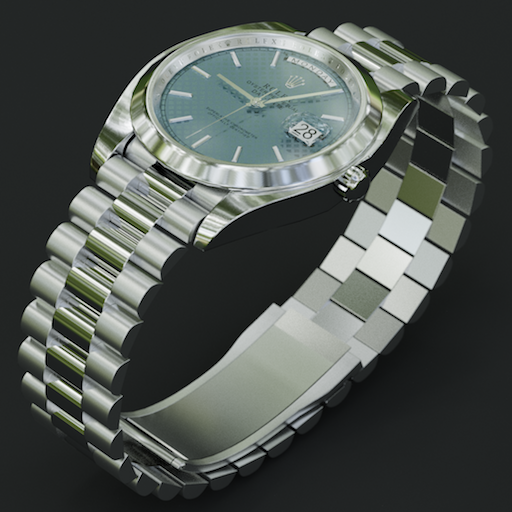

GoPaint is a digital painting application for mobile VR headsets. I started this project because I wanted to do more digital painting, and I liked the idea of being able to work on paintings on a large virtual canvas with a headset that I could easily bring with me anywhere. A little while later and I had the tool I was dreaming of, and am very pleased and honored to see people using it all around the world.
I've made an erosion simulator in Unity based on the paper "Interactive Terrain Modeling Using Hydraulic Erosion" - Stava et al. 2008. This an ongoing personal project that will develop into a node-based terrain generator and editor.


I've been making gifs for some time now. I always aim to make them pleasing to look at for a while, even though most are only two second repetitions. I love the challenge of creating entrancing infinite loops with very few frames.
I love to make 3D models, both as an artistic pursuit as well as a challenge to craft clean topology and highly optimized virtual assets.
